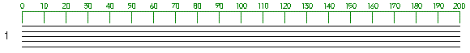
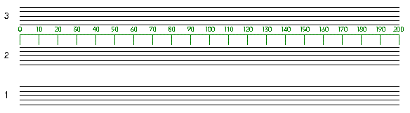
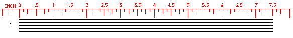
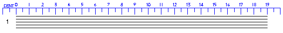
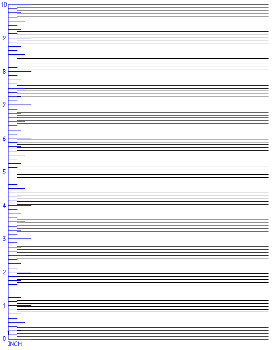

A visual spacing scale may be set up by typing SC. These spacing numbers will not appear when the page is printed. SCORE's spacing units run from 0 to 200 for 7 1/2" staff width. 
If a number is added, the scale will appear over that staff number. Typing
SC2 produces:

If no number follows SC or the SC box is clicked on, the spacing scale will appear over the highest staff currently on the screen.
Typing SCX or clicking on the SCX box will make the scale disappear.
Typing SCI will create the spacing scale in inches.

Typing SCC will create the spacing scale in centimeters.

Typing SCV will create a vertical spacing scale in inches.
(SCVC = centimeters.)
